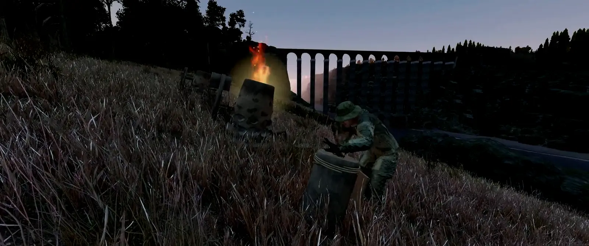
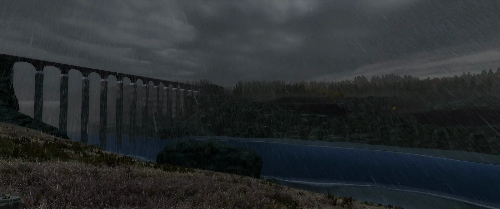
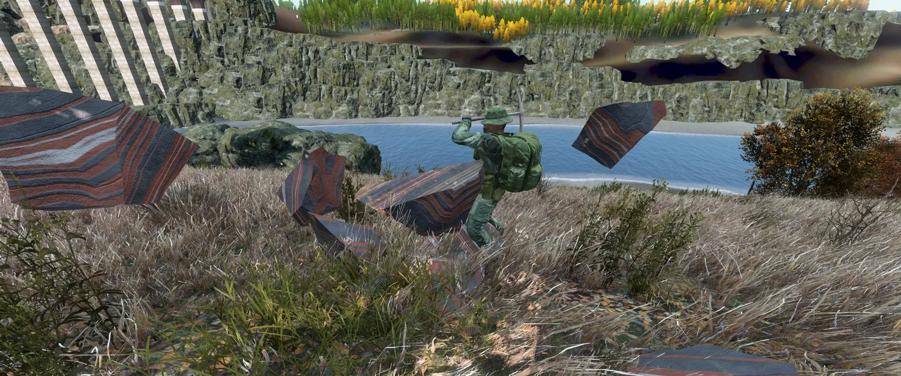
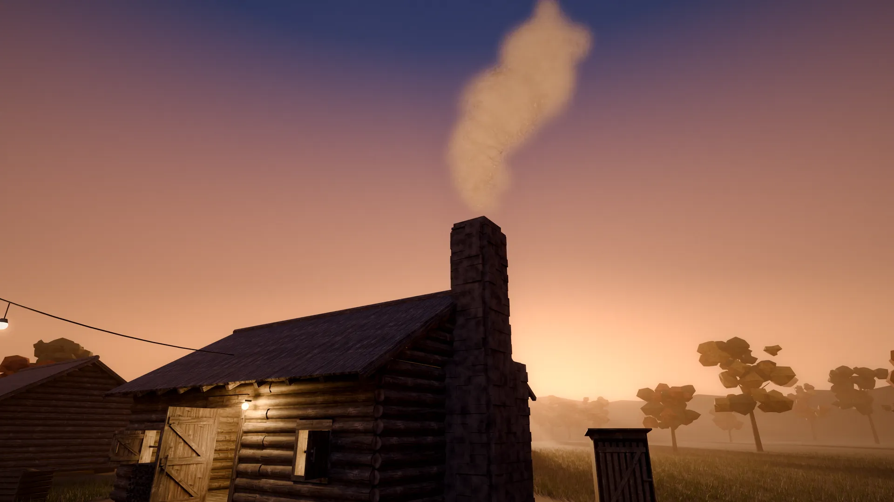
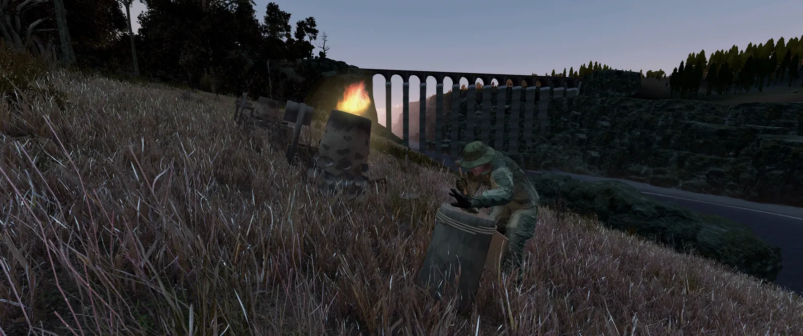

ASHWRIGHT
Antoria after the collapse. You start with a stone pickaxe and make everything yourself: tools, weapons, clothing and a house with a fireplace where you wait out the night. Alone or with others, in English and German.
„In an emergency, the island provides for itself.“
That is how the leaflet starts that every new character carries in their jacket.
The island after the collapse
Antoria is deserted. The harbour lies abandoned, the infected stand on the coast road, and the night gets dark. A civil defence leaflet in your jacket tells you what comes next: the island has to provide for itself, and you get that started.
More about the island
You make everything yourself
From a field stone to a hand cannon: find ore, mine it, smelt it into ingots in the clay furnace, forge it at the anvil. Every deposit sits where the geology puts it, and its grade ends up in the tool. You assemble weapons from individual parts.
More about crafting
Your house, your parlour
Work in progress
You build huts, houses and walls from wood, clay and stone. Shutters and a fireplace turn a bare frame into a parlour, and furnishing it gives you comfort. Outside it is the end of the world, inside your fire is burning.
More about building
14 professions, five quality grades
Whoever specialises in a profession is needed and trades with others, because everything that exists was made by a player. How good something turns out depends on the ore and on the experience of whoever makes it. Every chain can be completed alone as well.
More about professionsThe five quality grades
- Impurecommon
- Solid
- Pure
- High-purity
- Flawlessrare

Images
Footage from the game, renders of our in-house models and concept images of how a furnished base should look. Not everything in the concept images is in the game yet.


Who will you be
Every job earns experience in its profession. You can learn everything, but mastering everything takes a lot of time.
Raw materials
Mining
Mine ore, with a bigger yield per level.
Prospecting
Find deposits and judge them.
Forestry & Resin
Fell trees, split wood, collect resin.
Hunting & Tanning
Pelts, leather, sinew and meat.
Refining
Smelting
Smelt ore into ingots in the furnace.
Ceramics & Glass
Crucibles, casting moulds, bricks.
Lab
Sulphur, saltpetre and other base materials.
Farming
Lay out beds, harvest, stock up.
Minter
Strikes the coins that are used for trade.
Making
Smithing
Tools at the anvil, as a minigame.
Gunsmith
Weapons from individual parts.
Mechanics
Engines and vehicles.
Building
Huts, houses, walls.
Outdoors
Survival
Make fire, improvised tools, the first days.
Skills
Fitness, stealth, ranged, melee, first aid: they improve through practice.
Support the server
The mod is free. If you want to help us, you can buy packages that only affect looks or recognition. Sales begin once the talks with Bohemia Interactive are done.
Reserved spot
Your place in season 0 is safe, even when the waves fill up. You start on the same day as everyone in your wave.
Supporter
Discord role, a name plate in chat and a place on the credits wall.
Skins
Clothing, weapon finish, base banners, your own master's mark. The look changes, the stats stay the same.
Queue
First in line when the server is full. Only comes if Bohemia approves it.
What you get
- Looks, recognition and comfort when logging in.
- Everything about gameplay stays as it is: if you buy nothing, you miss nothing.
What you earn in the game
- Weapons, ammo, vehicles, materials and coins
- Experience, recipes and the size of your base
Whitelist
At launch only registered players get onto the server, in waves. We are two people and want to be able to help everyone on the first evening instead of drowning in chaos.
English and German on the server. Safe spots are in the shop preview.
- Join the DiscordAll you need is a Discord account.
- Read the rulesThere are only seven.
- Sign upIn the “whitelist” channel click Sign up and enter your Steam64 ID (17 digits, you find it on steamid.io).
Questions
When does season 0 start?
As soon as the date is fixed, it will be posted in Discord under announcements. Turn on the ping and you will not miss it.
What does the mod cost?
The mod is free. To support us there will be optional packages that only affect looks. They are described in the shop preview.
Can I play solo?
Yes. Every chain can be completed alone. A group just gets there faster.
How does trading work?
Between players. Everything that exists was made by a player, and the minters strike the coins that are used for trade.
Do I need the whitelist?
Yes, at launch. You can sign up in Discord.
Does it run on PlayStation or Xbox?
Sorry, no. DayZ mods are PC only.